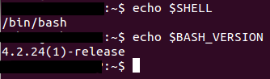
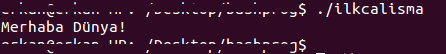

Kabuk Programlama (Bash)
Bu ilk çalışmamızla Kabuk Programlama yazı dizimize başlıyoruz. Amacımız kabuk programlama konusuna giriş seviyeden başlayıp kendi işlemlerimizi yapabilecek seviyeye gelmektir.

İşletim sistemini oluşturan kavramlar dediğimizde temel olarak çekirdek (kernel), kabuk (shell) ve komutlardan bahsedebiliriz. İşletim sistemini bu 3 kavram faaliyette tutar. Bunlara temel olarak değinip aralarındaki ilişkiyi anlayabilmek adına 3 ara başlığımızla devam edelim.
Kabuk, girilen komutları inceleyip çalıştırmak üzere gerekli kaynakları bulup çekirdeğe ileten bir yazılımdır. Komutların gerektirdiği kaynakları bulur ve kullanacak kaynaklara iletir.
Unix için açık kaynak olmasının getirdiği avantaj ile geliştirilmiş birçok kabuk programı vardır. Kısaca bunlara bakacak olursak;
Sh
Bourne Shell
Steve Bourne tarafından geliştirilmiş orijinal Unix kabuğudur.
Csh
C-Shell
Berkeley Üniversitesinde C dili ile geliştirilmiştir.
Ksh
Korn Shell
David Korn tarafından geliştirilmiştir. Yetenekleri itibarıyla en etkili kabuk olarak bilinir.
Bash
Bourne Again Shell
Free Software Foundation tarafından geliştirilmiştir.
Tcsh
T-Shell
Geliştirilmiş C-Shell olarak bilinir.
Zsh
Z-Shell
Bash,ksh,tcsh ile benzerlikler gösteren bir kabuktur.
Bizim çalışacağımız kabuk uygulaması Bash olacaktır. Bash, kullanım kolaylığı sebebiyle oldukça yaygındır. Komut tamamlama özelliği ile önemli bir ayrıcalığa sahiptir.

Ekteki resimde hangi kabukta çalıştığımızı ve çalıştığımız kabuğun versiyonunu girdiğimiz komutlarla öğrendik. Buna göre Bash kabuğundayız ve versiyonumuz 4.2.24(1)
Çekirdek, kullanıcı tarafından girilen komutu, kabuk tarafından yorumlanıp kendisine iletildikten sonra işleme alır. Kabuk ile çekirdek birlikte çalışır. Örneğin silme komutunu kullanarak bir klasör silmek isteyip silme komutunu girdiğimizde işlemler şu şekilde gerçekleşir:
Kabuk, silme komutunun dosyasını bulur ve bu dosyayı çalıştırır. Silme komutunun dosyası aslında bir uygulamadır. Girilen komuttaki hedef klasörü silme komutunun dosyasına parametre olarak gönderir. Çekirdek, silme dosyasını-programını çalıştırır ve silme işlemi gerçekleşir. İşlem tamamlanınca tekrar kabuğa dönülür ve imleç yeni komutu bekler. İşte kabuk ve çekirdek arasında temel olarak böyle bir ilişki vardır.
Komutlar bildiğimiz ve kullandığımız üzere sisteme gönderdiğimiz talimatlardır. Silme, kopyalama vb. işlemleri yapmamızı sağlayan işletim sistemine özel komutlar vardır. Komutlar, yukarıda değindiğimiz diğer iki kavrama göre kullanıcı tarafından direkt girildiği için kullanıcı tarafına daha yakındır diyebiliriz. Komutlar işlem yapmamıza ve direkt fiilî sonuçlar elde etmemize yarayan uygulamaların çağrılış şeklidir.
Buraya kadar anlatmaya çalıştığımız kavramları ve işletim sisteminin çalışmasını önceki resimle de pekiştirelim. En üst katmanda kullanıcı var. Kullanıcı direkt kabukla çalışır. Kabuk aldığı komutları(talimatları) çekirdeğe iletir. Çekirdek de sistemin donanımına ulaşan ve beraber çalışan katmandır.

İşte kabuk programlama, üzerinde çalıştığımız işletim sisteminin komutlarını, topluca ve belli ihtimallere veya kontrollere bağlayarak çalıştırmamızı sağlayan programlar yazmaktır. Yazdığımız bu programların dosyalarına script adı verilir. Script dosyaları, temel programlama kontrollerini ve komut yığınlarını bir arada bulundurur. Kabuk programlama ile script dosyalar üretiriz. Bu dosyalar ile kabuğa talimatlar gönderir ve işlemler yaparız.
Şimdi yaptığımız bu girişin ve bilgilerin ışığında kabuk programlama çalışmamıza başlayalım. Bash kabuğunda çalışmalar yapacağız. Yaptığımız örnekleri herhangi bir Linux dağıtımı altında çalıştırabiliriz. Çalışmalarımızı uçbirim penceresinde nano editörünü kullanarak yapacağız. Sizler tabii ki tercihiniz ölçüsünde başka editörler kullanabilirsiniz.
Önce uçbirimimizi açalım.
mkdir bashprogramlama
komutuyla bashprogramlama isimli bir klasör oluşturalım. Çalışmalarımızı buraya kaydedeceğiz.
cd bashprogramlama
komutu ile klasörün içine giriyoruz.
touch ilkcalisma
komutu ile ilkuygulama isimli dosyamızı oluşturalım. Ardından nano ilkuygulama diyerek dosyamızı açıyor ve aşağıdaki kodları yazıyoruz:
#!/bin/bash
echo “Merhaba Dünya!”

Ekteki resimde gördüğünüz gibi kodlarımızı yazdık. Dosyamızı kaydederek çıkıyoruz. Dosyanın içindeki komutları çalıştırması için çalıştırma özelliğini eklememiz gerekiyor. Yoksa bu hâliyle bir text dosyası gibi durur.
chmod +x ilkcalisma
komutuyla dosyaya çalıştırma özelliğini ekliyoruz.
./ilkcalisma
komutuyla da oluşturduğumuz script dosyasını çalıştırıyoruz.

Sonuçta “Merhaba Dünya” yazan ilk uygulamamızı yazdık ve çalıştırdık. Burada #!/bin/bash satırı ile uygulamanın bash kabuğu için olduğunu belirtmiş oluyoruz. Bu satırın çalışmaya bir etkisi yoktur. Başında bulunan # simgesi zaten satırı geçersiz kılar. Genelde script dosyalarının başında hangi kabuk için yazıldığı belirtilir. Diğer satırdaki echo komutuyla da mesajımızı ekrana bastırdık.
Açıklama Satırları
Yazdığımız kodların karşısına başına # girerek açıklayıcı satırlar girebiliriz.
Örnek: echo “Merhaba” #ekrana Merhaba mesajını bastırmak için yazdık.

Bildiğiniz üzere özellikle ilk çalışmalar Merhaba Dünya çıktısını üreten uygulamalar olur. Biz de bu kurala uymuş olduk. :)
İlk uygulamamızda ekrana “Merhaba Dünya” mesajı basan bir uygulama yaptık. Bu mesajı öğrendiğimiz gibi echo ile yaptık. Şimdi bu mesajı echo kullanıp direkt yazdırmak yerine bir değişkene atayıp değişkeni ekrana bastıralım. Böylece ilk değişken kullanımı örneğimizi de yapmış olacağız.
Script dosyamız içine kodları yazarken = atama işareti ile bir değişkene atama yaptığımızda değişken direkt olarak sistem tarafından tanınır. Tanımladığımız bu değişkene de $degiskenadi şeklinde ulaşır ve kullanırız. Değişkenler, isimlerinin başında sayısal karakter barındırmaz. Bunun dışında istediğimiz gibi degişkene isim verebiliriz.
Şimdi bunun bir örneğini yapalım. Yine dosyamızı açıyor ve aşağıdaki girişleri yapıyoruz:
#!/bin/bash
degisken1=”Merhaba Dünya”
echo $degisken1

Gördüğünüz gibi ilk çalışmamızda yaptığımız echo ile direkt mesaj yazdırmak yerine degisken1= kullanarak mesajımızı degisken1’in içine kaydettik. Echo komutu ile de degişken1’i yazdırdık. Degisken1 isimli değişkene ulaşmak için de $ karakterini kullandık.
Yine ./ilkcalisma dediğinizde ekrana Merhaba Dünya mesajının basıldığını göreceğiz.
İlk uygulamamızda direkt ekrana istediğimiz bir mesajı bastırdık. Uygulama yazıldıktan sonra o mesaj artık değişikliğe uğramaz. Çünkü direkt kodlamada o mesajı belirttik. Uygulama çalıştığı sürece hep o mesajı bastı. Daha sonra ikinci uygulamamızda da bunu bir değişkene atayarak bastırdık. Değişkenin değeri de yine kodlama içerisinden belirtildiği için aslında ilk uygulamadan çok farklı olmadı. Yalnız tabii ki bu aşamaya gelmek için o denemeleri yapmamız faydalıydı.
Üçüncü çalışmamızda ise değişkenimize çalışma esnasında bir değer atayacağız. Yani olması gerektiği gibi dinamik bir yapı olacak. Kullanıcıdan çalışma esnasında değeri alacağız ve ekrana bastıracağız. Yapacağımız bu uygulama giriş/çıkış işlemlerine güzel bir örnek olacak. Kullanıcıdan bilgi alacağımız giriş ve ekrana bastıracağımız çıkış işlemi.
Bu sefer dilerseniz yeni dosya oluşturup çalışalım.
Touch giriscikis
komutuyla giriscikis isminde bir dosya oluşturuyoruz ve
nano giriscikis
komutuyla dosya içine giriyoruz.

Gördünüz gibi echo ile kullanıcıdan bir mesaj girmesini istiyoruz. Ardından kullanıcının mesajını read kodu ile mesaj isimli değişkene atıyoruz. Read kodu kullanıcının bir veri girmesini bekler. Sonra girilen bu veriyi de burada belirttiğimiz mesaj isimli değişkene atıyor. Ardından da $mesaj kodu ile değişkenimize ulaşıyor ve yine echo ile ekrana bastırıyoruz.
Diğer uygulamalarımıza göre bu uygulamamızda sabit durumdan çıkarak çalışma esnasında değişik sonuçlar üretebilen bir kodlama yaptık.
Kabuk programlama yazı dizimizin bu çalışmasında temel kavramlara değinip 3 konu işlemiş olduk. Bu ilk çalışmamız sonucunda artık içine kod yazabileceğimiz bir script dosyası oluşturabiliriz. Öğrendiğimiz kodlar itibarıyla da ekrana dilediğimiz mesajı bastırabilir (echo), bir değişken tanımlayıp (degisken1) ona değer atayabiliriz (degisken1=”deger”). Yine o değişken değerini ekrana bastırabileceğimiz gibi (echo) tanımladığımız değişkene çalışma esnasında da girilen değeri okuyup (read) ve bastırabiliriz (echo).
Önümüzdeki sayıda bu konuları pekiştirip yeni konularla daha etkin ve kullanılabilir araçlar geliştireceğiz.
Görüşmek üzere.